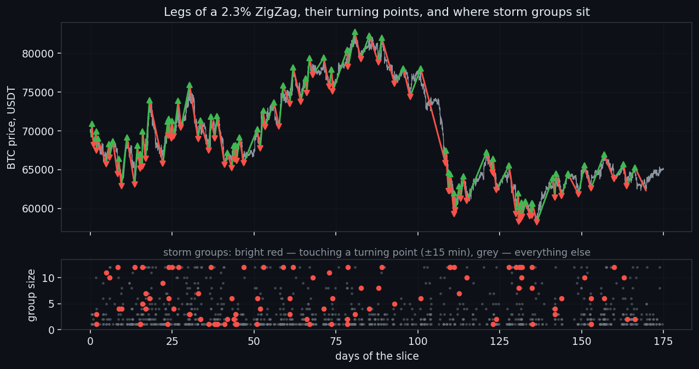
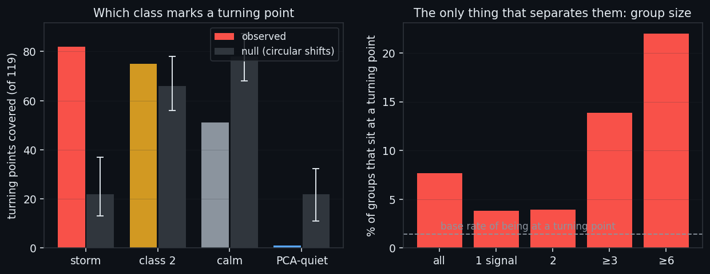
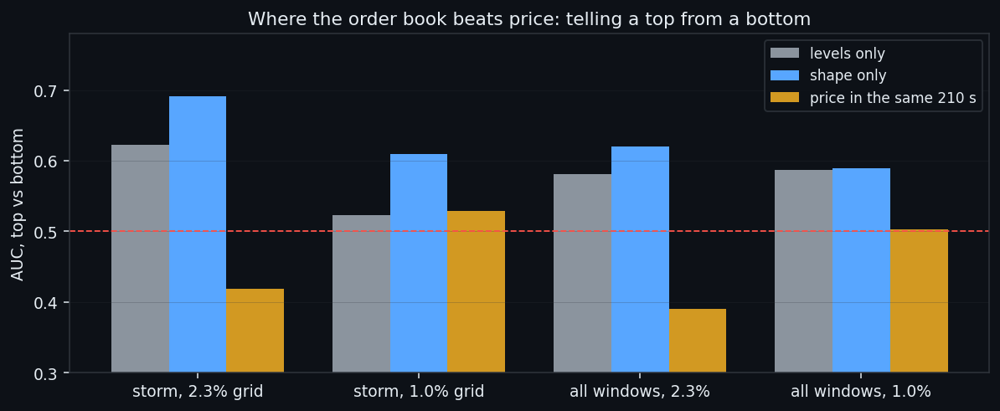
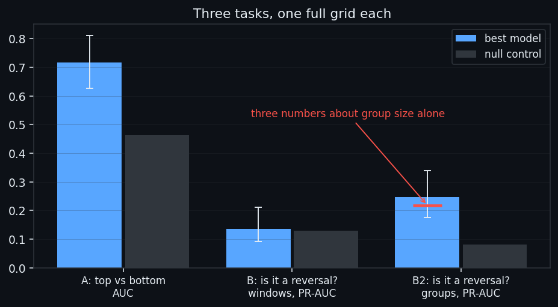
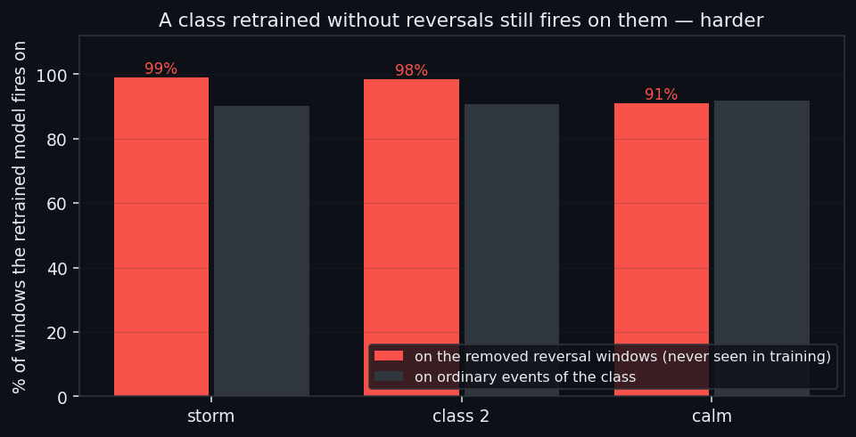
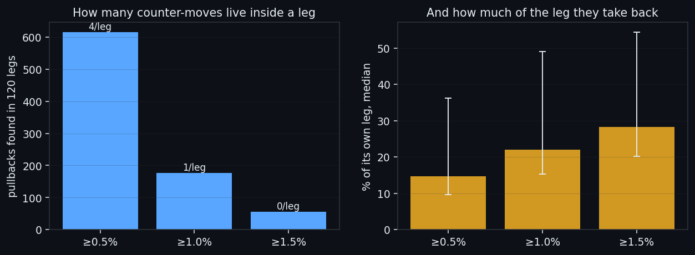

We Found the Reversal Signal. Machine Learning Could Not Tell It Apart.
A market moves in legs: a few percent one way, a turning point, then a few percent the other. This study asks whether the order book carries an event that marks the turn — and whether that event can be separated from the thousands of ordinary events of the same class. On 175 days of BTC the first half works: groups of signals pile up at turning points 3.7× more often than chance, every class shows the same reversal signature, and inside a storm the shape of the flows tells a top from a bottom where price itself says nothing. The second half does not. Every way we tried to learn 'is this a reversal' landed on top of its own null control, and a class retrained with all reversal windows removed still fires on them — harder than on its ordinary events. The signal is real; the discriminator is not.
Full walkthrough — streamed from YouTube.
① Legs, groups, and one rule that shapes everything
Two markings of the same seconds are laid over each other.
The first is price phase. A centred 5-minute average smooths the tick noise, a 2.3% ZigZag marks the turning points, and the stretch between two turning points is a leg. On our slice: 120 legs (60 up, 60 down), median size 4.2%, median duration 24.5 hours, covering 97% of the time. Note that this marking looks ahead — the smoothing is centred. That is fine for analysis and fatal for trading, and we never let it into a model.
The second is market state: a window of 8 order-book features × 210 seconds, judged by four detectors trained in an earlier study — storm, class 2, calm and PCA-quiet.
And one rule shapes everything that follows: **an event is not a single firing of a detector, it is a group of firings in a row.** Signals arrive in dense clusters inside one move — 50% of storm episodes are single windows, but the rest run a median of 7 minutes and up to 360. Average over firings and every long cluster counts as a dozen separate events; the number you get back is an average over clusters weighted by their length, and it shows an edge that does not exist. The unit is the group, everywhere.
A group counts as sitting at a turning point if its interval crosses the pivot ±15 minutes.

② The signal: storm groups pile up at the turns
The null control matters more than the observation here. There are many groups and few turning points, so overlaps happen on their own. So the entire sequence of a class's groups is circularly shifted against price 999 times, and the same count is repeated.
Storm groups at leg changes: 95 observed against 26 in the null (bottom→top 51 vs 13, top→bottom 44 vs 13, p=0 in both). Inside leg bodies the observed counts sit inside the null interval, as they should. PCA-quiet does the opposite — it is essentially absent at turning points (1 against a null of 30).
Now read it backwards, which is the only direction that can be traded: a group has just fired — how likely is it that we are at a turn?
| storm group | groups | at a leg change | share | |---|---|---|---| | all | 1233 | 95 | 7.7% | | single firing | 553 | 21 | 3.8% | | ≥3 firings | 476 | 66 | 13.9% | | ≥6 firings | 223 | 49 | 22.0% |
Against a base rate of 1.4% of the time being "at a turn", a group of six or more is a 15-fold lift. Keep that number in mind: by the end of the study it is still the only thing that works, and it is a property of the group's size, not of what the windows contain.
One honest limitation, stated up front. We measured when the group arrives relative to the pivot: the median offset is -1.2 minutes, and the pivot comes after the middle of the group in only 45% of cases. Measured from the end of the group it is ahead far less often. The event states the turn, it does not anticipate it.

③ The signature of a reversal — the same in every class
Every group is reduced to one average matrix of 8 features × 210 seconds, and the buckets of groups (up leg · down leg · bottom→top · top→bottom · outside legs) are compared. A cell is the deviation of a bucket from the mean of its own class, divided by the spread between events of that class, with a Benjamini-Hochberg correction over three 70-second blocks of the window.
Why deviation from its own class, not from the market: classes live at different absolute levels — a storm is by definition high flow. Measured against a global mean, every storm map would be red all over and say nothing about reversals.
The result is the same in all three classes that have enough reversal events: at a turning point all flow features are lifted above their usual level and the const walls are pressed down. What differs is amplitude, and it is largest where you would least expect it — in the quiet classes:
| class | events | reversal events | strongest three (deviation, d) | |---|---|---|---| | storm | 1233 | 51 + 44 | resist_plus +0.30 · resist_minus +0.29 · support_plus +0.29 | | class 2 | 3383 | 42 + 64 | resist_plus +0.42 · resist_minus +0.42 · support_minus +0.41 | | calm | 3228 | 31 + 38 | resist_plus +0.56 · support_minus +0.56 · resist_minus +0.56 |
A storm at a reversal is only mildly unusual for a storm. A calm window at a reversal is very unusual for calm — which is the first hint that "reversal" is not a state of its own but the loud end of whatever state you are already in.
There is also something the map does not show. The colouring is flat along each row: the difference is one of level, not of how the flow is arranged in time. Which is exactly what the next section goes after.

④ Shape: the one place the book beats price
If level is all there is, then the arrangement inside the 210 seconds carries nothing. So we measured it directly. Each feature of a window gets five descriptors: level (mean), slope (OLS), third third minus first, curvature, and sharpness (max minus mean). Then: top versus bottom.
Two safeguards. The unit here is the window, not the group, because there are only a few dozen groups at pivots and this question needs events. And everything runs on two ZigZag grids — 2.3% (our legs, 119 pivots) and 1.0% (481 pivots). An effect that shows up on one grid and vanishes on the other is a fit to a particular set of pivots, not a finding.
Logistic regression, 5 blocked folds of 12 hours, bootstrap by pivot (windows near one extremum are near-copies; bootstrapping over them would give a deceptively narrow interval):
| slice | levels only | shape only | price in the same 210 s | |---|---|---|---| | storm, 2.3% grid | 0.623 | 0.691 [0.619, 0.766] | 0.419 | | storm, 1.0% grid | 0.523 | 0.609 [0.565, 0.655] | 0.529 | | all windows, 2.3% | 0.581 | 0.62 | 0.39 |
This is the one place in the whole study where the order book beats price. At the extremum price inside 210 seconds does not move — as a predictor it is worse than a coin (0.419) — while the shape of the flows separates a top from a bottom at 0.691, and it holds on the second grid (0.609). The working descriptor is sharpness: at a top the burst of `vol_buy` fades across the window, at a bottom `const_support` flares.
The obligatory honest note: "price over the last hour" scores 0.9861 on this task — but a pivot is the reversal of an hour-long move, so that column is a tautology and stands only as a ceiling, never as a competitor.

⑤ Where it stops: three grids and a null control
Everything above is description. Turning it into a decision means a classifier, so we built three of them, each with its own full grid (feature sets × model families × hyperparameters: logistic, boosting, forest, kNN, RBF-SVM, dilated Conv1D on the raw 8×210).
Three rules keep this honest. GroupKFold by event — windows near one extremum are near-copies, so splitting them between train and test hands the model the answer. **The winner is picked among order-book feature sets only** — price sets are controls, and the tautological one wins any grid. The null permutes labels between events of similar size — permute freely and the base rate of positives itself shifts, which makes the null's PR-AUC incomparable.
| task | rows / events | positives | best | result | null | |---|---|---|---|---|---| | A · top vs bottom | 398 / 79 | 175 | форма (32), логрегресія | AUC 0.7167 [0.627, 0.81] | 0.463 | | B · reversal vs leg body, windows | 4494 / 187 | 398 | рівні (8), ліс | PR-AUC 0.1352 [0.091, 0.21] | 0.129 | | B2 · reversal vs leg body, groups | 1233 / 1233 | 95 | розмір+описи (51), логрегресія | PR-AUC 0.2459 [0.175, 0.34] | 0.08 |
Read it in order. Task A — which side of a reversal we are on, given that we already know it is one — is solvable, at 0.7167 against a null of 0.463, and the winning feature set is shape, not levels. Task B — is this a reversal at all, asked of a single window — returns 0.1352 against a null of 0.129: nothing. Task B2, the same question asked of whole groups, returns 0.2459 against 0.08 — a real but modest edge.
And then the detail that decides the study: in task B2 the feature set "size of the group", three numbers, scores 0.2183 of the winner's 0.2459. Forty-eight descriptors of what the windows actually contain add about 0.03. The reversal is not distinguished by **what the event looks like but by how long it is**.

⑥ The decisive test: classes retrained without reversals
If a reversal event were a distinct subtype of its class, a detector that had never seen one would not fire on it. That is a test, not an opinion, so we ran it: each class was retrained with the production recipe — same architecture from its grid, same 8 epochs, same 2% held out in four contiguous chunks with an embargo, threshold at the base rate — but with **all windows of reversal groups removed from training entirely**, neither positive nor negative. (Putting them in the negative class would place near-identical windows on both sides of the label and simply break the detector.)
Quality did not suffer: on the held-out 2% the new storm detector runs at precision 0.9322 / recall 0.9402, class 2 at 0.9042 / 0.9026, calm at 0.9224 / 0.8467 — all within noise of the originals.
And on the windows it had never seen, the retrained model fires more than on the ordinary events of its own class: storm 99% against 90%, class 2 98% against 91%, calm 91% against 92%.
So reversal events are not a separate subtype. They are the most typical and strongest representatives of their class — which is why no amount of model capacity separates them, and why the only thing that ever worked was the size of the group.
So reversal events are not a separate subtype of their class — and no amount of model capacity will separate them, because there is nothing categorical there to separate.

⑦ Why the negatives are contaminated: pullbacks inside a leg
There is a structural reason a classifier is being set an unfair question here, and it is worth measuring rather than asserting. A leg is a move from one turning point to the next, but it does not go straight: price keeps falling back against it. To count those, a finer ZigZag is run inside each leg and the segments running against the leg's direction are taken. Three thresholds, not one, because the count depends on the threshold more than on anything else:
| threshold | pullbacks | per leg (median) | legs with none | size | share of its own leg | duration | typical position in the leg | |---|---|---|---|---|---|---|---| | ≥0.5% | 615 | 4 | 11 of 120 | 0.787% | 15% | 1.45 h | 41% | | ≥1.0% | 176 | 1 | 45 of 120 | 1.288% | 22% | 2.8 h | 38% | | ≥1.5% | 56 | 0 | 82 of 120 | 1.753% | 28% | 4.67 h | 39% |
A typical ≥0.5% pullback takes back 15% of its own leg over 1.45 hours, there are 4 of them per leg, and only 11 legs out of 120 have none. At the 1% threshold a pullback is 1.288% deep — which is comparable to the 2.3% that defines a leg in the first place.
That is the point. For the order book, a deep pullback and a reversal are nearly the same event. When we ask a model to separate "reversal" from "leg body", a large part of the negative class it is told to reject consists of small reversals that our ZigZag threshold happened not to promote. The label is not clean, and no model fixes a label.
The same argument runs the other way as well: 37 of the 119 turning points have no storm near them at all, and no other class steps in above its own null. Those pivots are simply quieter — the price range ±15 minutes around them is 0.515% against 0.869% where a storm is present. So the positive class is incomplete too.

⑧ What this is worth
Found. Groups of storm signals concentrate at turning points 3.7× above chance and survive a 999-shift null. The reversal signature is identical across classes — all flow features up, walls down — and strongest in the quiet ones. Inside a storm the shape of the flows separates a top from a bottom at AUC 0.691 on two independent ZigZag grids, in a window where price itself is worse than a coin flip.
Not found. Any way to decide, from the content of a window, that this event is a reversal. Window level: 0.1352 against a null of 0.129. Group level: 0.2459 against 0.08, and 0.2183 of that comes from three numbers describing the group's size. Classes retrained without reversal windows recognise them better than their own ordinary events. And the event arrives at the turn, not before it.
We are stating this as a negative result on purpose, because the shape of the negative is informative: the failure is not "there is no signal in the order book" — the signal reproduces against every control we could build. The failure is that a reversal is not a different kind of event, it is the loud end of an ordinary one, and a classifier asked to separate degrees of loudness inside a continuum has nothing categorical to hold on to.
Which is also why we think this line is worth continuing rather than closing. The pieces that survived every control — group size, the shape asymmetry inside a storm, the identical signature across classes — are the raw material of a decision rule, not of a classifier. Our working expectation is that further study of these reversal signals will make an effective trading bot possible: what is missing is not the signal but a way to separate it from the rest of its class.
Everything here ships with a research diary written as an executable recipe: the commands in order, the reasoning behind every choice, the six traps we actually fell into — including a null control that quietly moved its own base rate, and a claim about groups that we spent a day testing on windows — and a table of control numbers with tolerances, so you can tell whether your own run reproduced ours — TRADE08_DIARY.md, right next to this page. Take your own data and check.
If this changed how you read the tape, the natural next step is Does the Phase of a Move Change What the Order Book Looks Like? —
Does the Phase of a Move Change What the Order Book Looks Like?
Local Tops and Bottoms in the Order Book
Volume Is the Fuel — Not the Steering Wheel
We recorded the Binance order book every second for six coins over five months and ran eighteen tests on what volume really does.
About Market Research Lab — What We Collect and Why
Most market commentary is storytelling.
Comments
Discussion is powered by GitHub. Enable it by adding secrets/giscus.json (repo IDs from giscus.app).